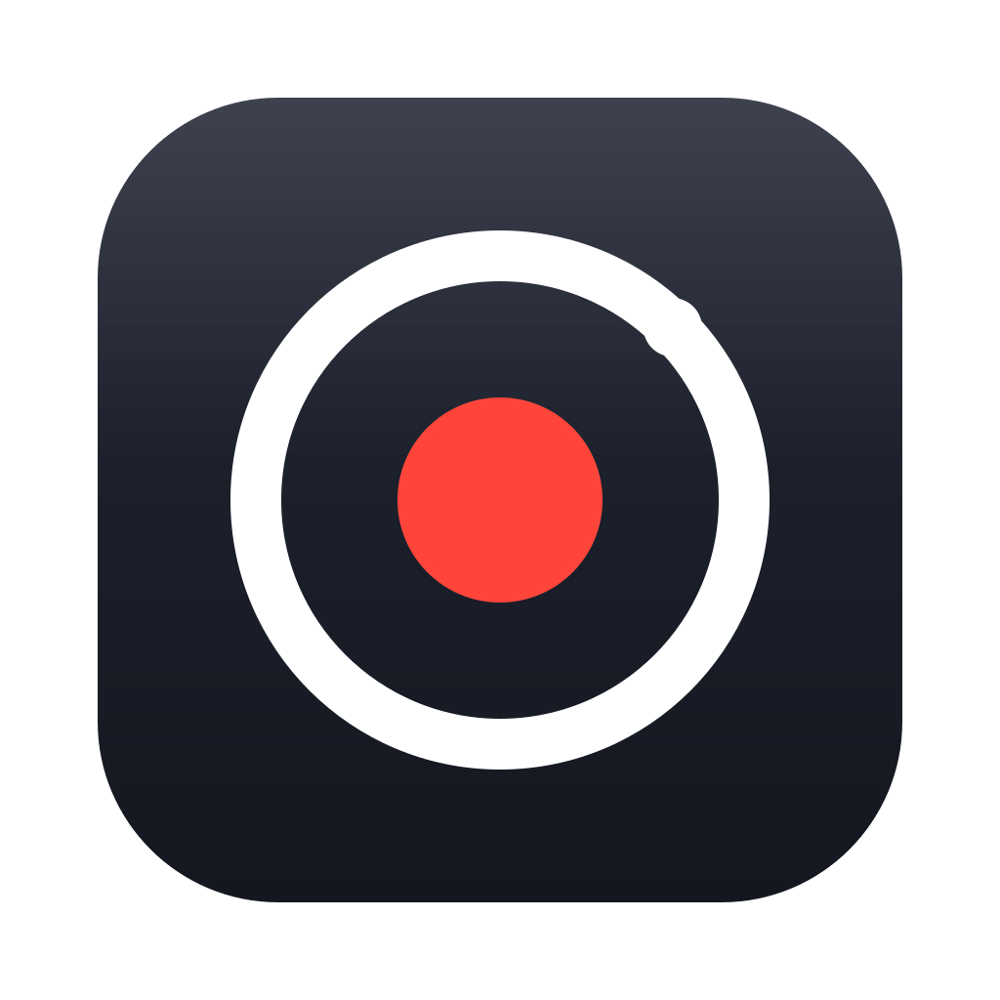
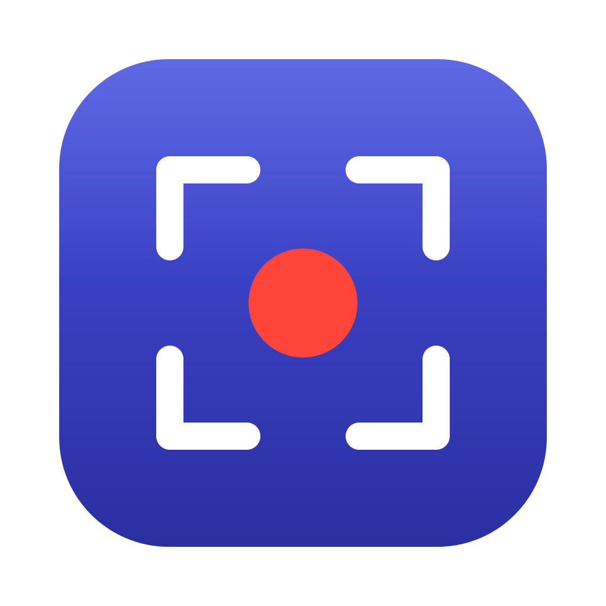
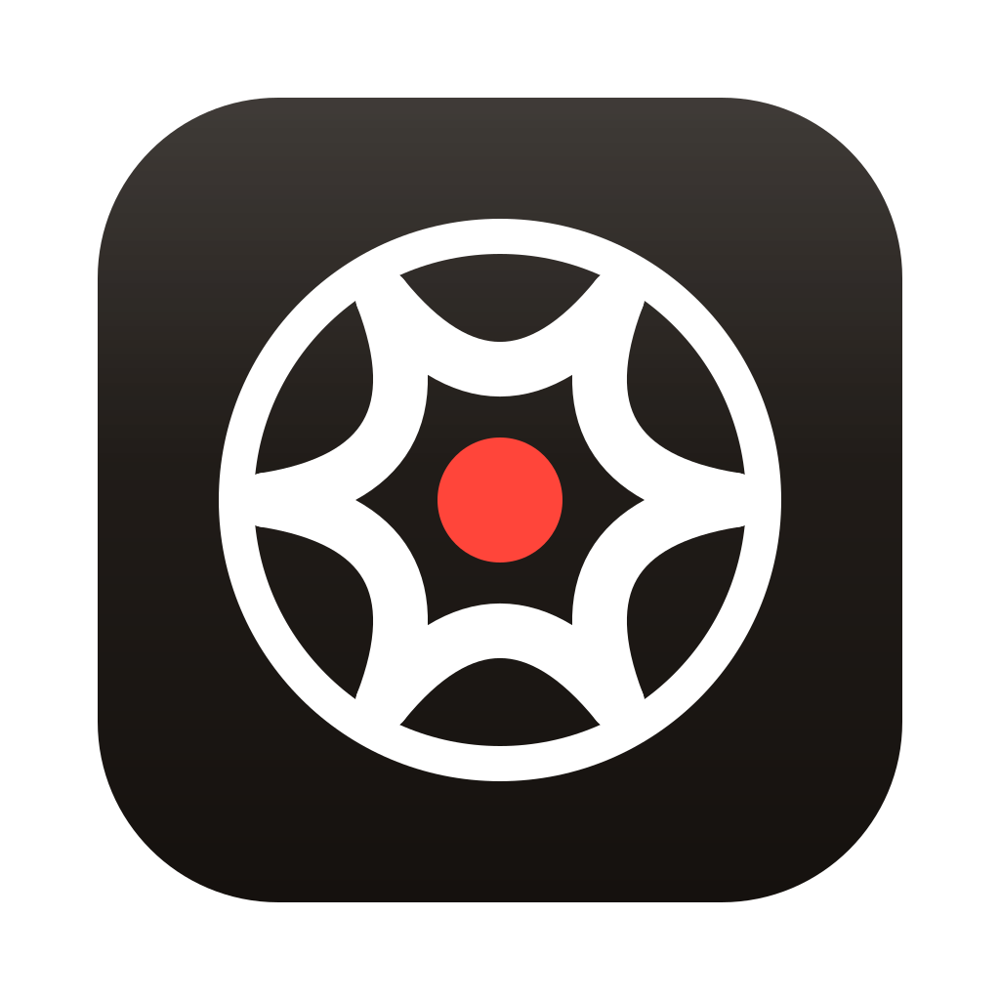
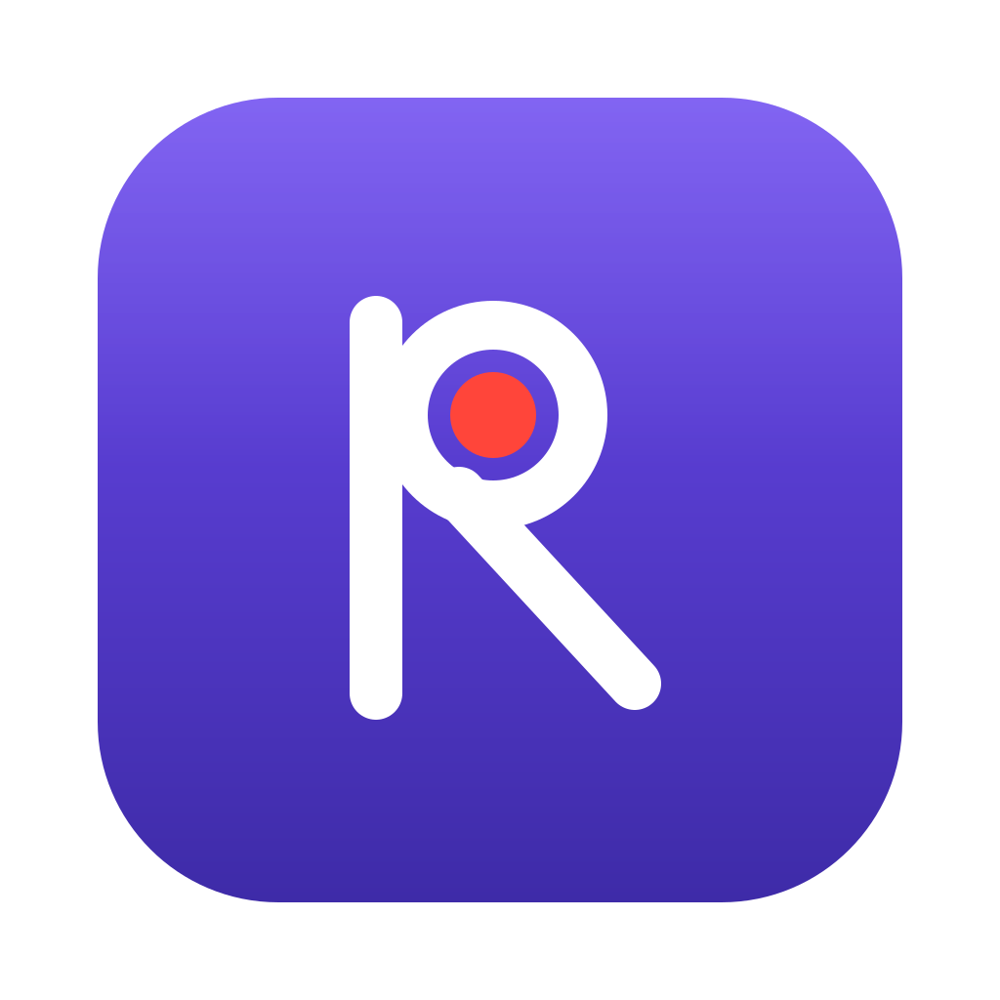
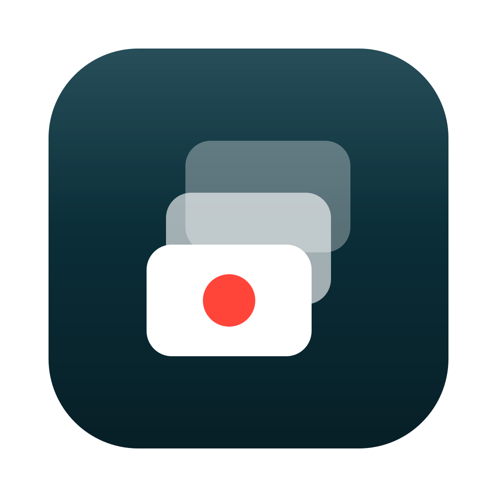

围绕「录制红点」这一共同品牌符号展开：每个方案都包含一颗红色录制键，分别诠释 录屏、区域截取、滚动拼接、贴图等核心能力。底板遵循 macOS 圆角矩形（squircle）规范，1024 画布。

纯几何：镜头环 + 录制红点，环上的卫星点代表「正在录制」的呼吸感。 最通用的录屏语义，石墨底板沉稳专业，任何尺寸下都清晰。

四个选区角标 + 中央录制红点 —— 既是截图的框选，也是区域录制的起点， 一个符号讲完整个产品。靛蓝底板在 Dock / Finder 中辨识度高，小尺寸下结构依然完整。

六叶快门光圈环抱红点，相机光学的直觉隐喻。动势最强， 但叶片结构在 32px 以下会糊成白环，适合作为品牌辅助图形。

放大镜 + 红色镜片：致敬截图 overlay 里的取色放大镜。 紫罗兰底板最有「macOS 原生」气质，但放大镜语义偏向「查看」而非「录制」。

三帧层叠向下，长截图拼接的具象化；前帧中央的红点点明录制身份。 深青底板独特，但层叠语义只覆盖产品的一个功能面。

一颗红色图钉把截取的画框「钉」在屏幕上 —— 贴图功能的直接表达。 唯一的浅色底板方案，干净克制，但图钉在小尺寸下可读性一般。